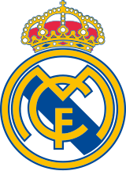
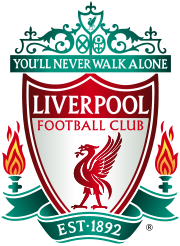
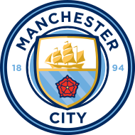
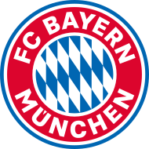
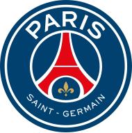

Real Madrid
Founded: 1902
Manager: Carlo Ancelotti
Captain: Nacho
Achievements:
| Competition | Titles |
|---|---|
| La Liga | 36 |
| UEFA Champions League | 15 |
| Copa del Rey | 20 |
| Supercopa de España | 12 |
| UEFA Super Cup | 5 |
| FIFA Club World Cup | 5 |
| Intercontinental Cup | 3 |
Manchester United

Founded: 1878
Manager: Erik ten Hag
Captain: Bruno Fernandes
Achievements:
| Competition | Titles |
|---|---|
| Premier League | 20 |
| FA Cup | 13 |
| League Cup | 6 |
| FA Community Shield | 21 |
| UEFA Champions League | 3 |
| UEFA Cup Winners' Cup | 1 |
| UEFA Europa League | 1 |
| UEFA Super Cup | 1 |
| FIFA Club World Cup | 1 |
| Intercontinental Cup | 1 |
FC Barcelona

Founded: 1899
Manager: Hansi Flick
Captain: Marc-André ter Stegen
Achievements:
| Competition | Titles |
|---|---|
| La Liga | 27 |
| Copa del Rey | 31 |
| Supercopa de España | 14 |
| UEFA Champions League | 5 |
| UEFA Cup Winners' Cup | 4 |
| UEFA Super Cup | 5 |
| FIFA Club World Cup | 3 |
| Inter-Cities Fairs Cup | 3 |
| Latin Cup | 2 |
| Catalan football championship | 23 |
| Copa Catalunya | 8 |
| Supercopa de Catalunya | 2 |
Liverpool
Founded: 1892
Manager: Arne Slot
Captain: Virgil van Dijk
Achievements:
| Competition | Titles |
|---|---|
| First Division/Premier League | 19 |
| Second Division | 4 |
| FA Cup | 8 |
| Football League Cup/EFL Cup | 10 |
| FA Charity Shield/FA Community Shield | 16 |
| Football League Super Cup | 1 |
| UEFA Champions League | 6 |
| UEFA Europa League | 3 |
| UEFA Super Cup | 4 |
| FIFA Club World Cup | 1 |
Manchester City
Founded: 1880
Manager: Pep Guardiola
Captain: Kyle Walker
Achievements:
| Competition | Titles |
|---|---|
| First Division / Premier League | 10 |
| Second Division / First Division / Championship | 7 |
| Third Division / Second Division / League One | 1 |
| FA Cup | 7 |
| Football League Cup / EFL Cup | 8 |
| FA Charity Shield / FA Community Shield | 6 |
| UEFA Champions League | 1 |
| European Cup Winners' Cup | 1 |
| UEFA Super Cup | 1 |
| FIFA Club World Cup | 1 |
FC Bayern Munich
Founded: 1900
Manager: Vincent Kompany
Captain: Manuel Neuer
Achievements:
| Competition | Titles |
|---|---|
| German Champions/Bundesliga | 33 |
| DFB-Pokal | 20 |
| DFB/DFL-Supercup | 10 |
| DFL-Ligapokal | 6 |
| UEFA Champions League | 6 |
| UEFA Cup | 1 |
| UEFA Cup Winners' Cup | 1 |
| UEFA Super Cup | 2 |
| FIFA Club World Cup | 2 |
| Intercontinental Cup | 2 |
Paris Saint-Germain
Founded: 1970
Manager: Luis Enrique
Captain: Marquinhos
Achievements:
| Competition | Titles |
|---|---|
| Ligue 1 | 12 |
| Ligue 2 | 1 |
| Coupe de France | 15 |
| Coupe de la Ligue | 9 |
| Trophée des Champions | 12 |
| UEFA Cup Winners' Cup | 1 |
| UEFA Intertoto Cup | 1 |